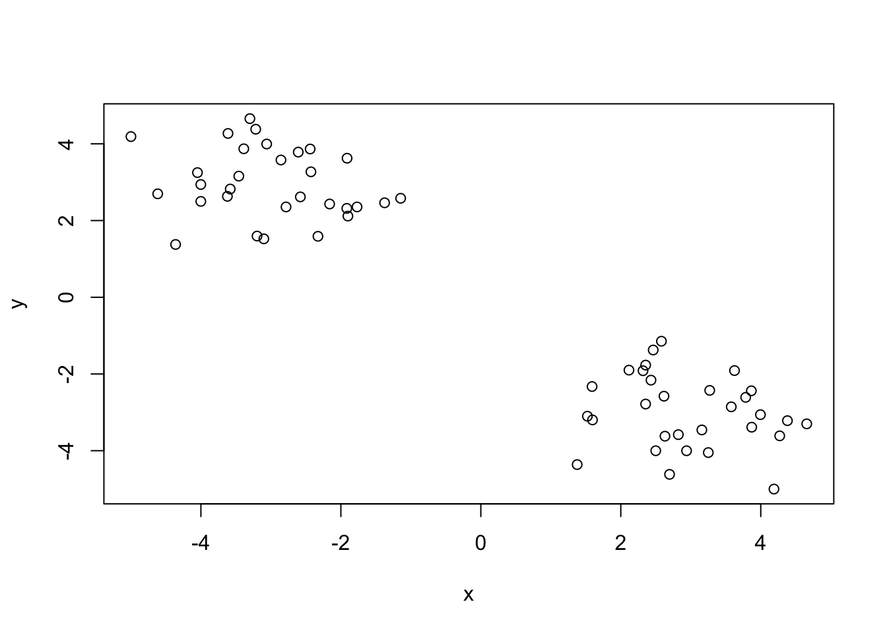
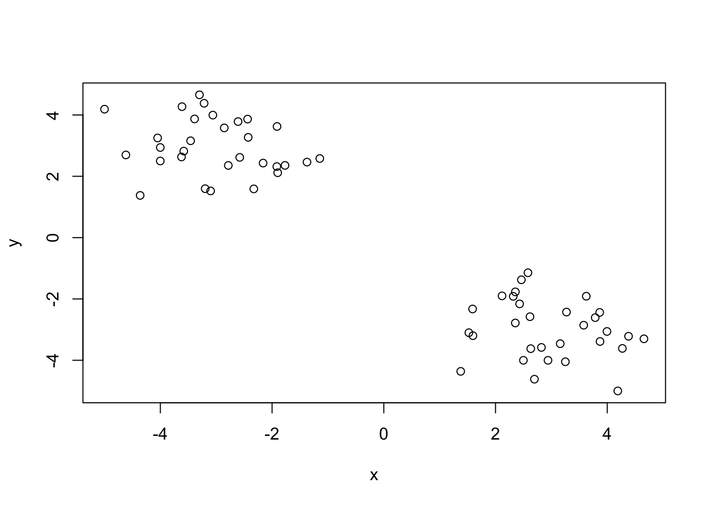
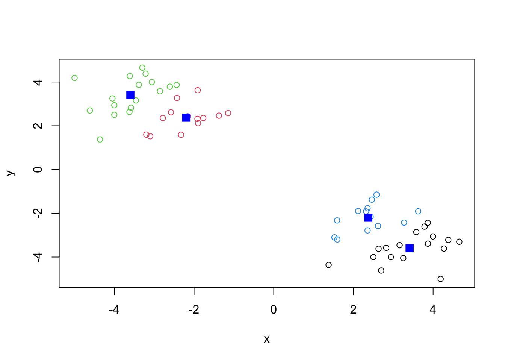
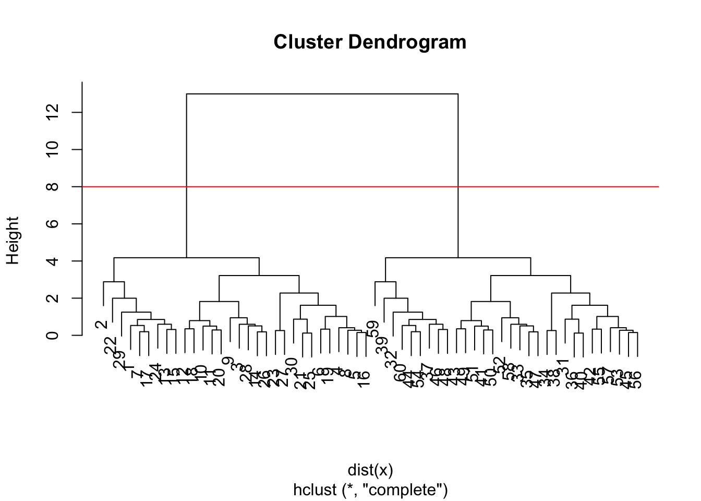
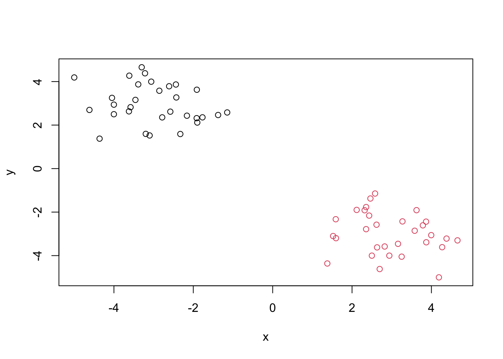
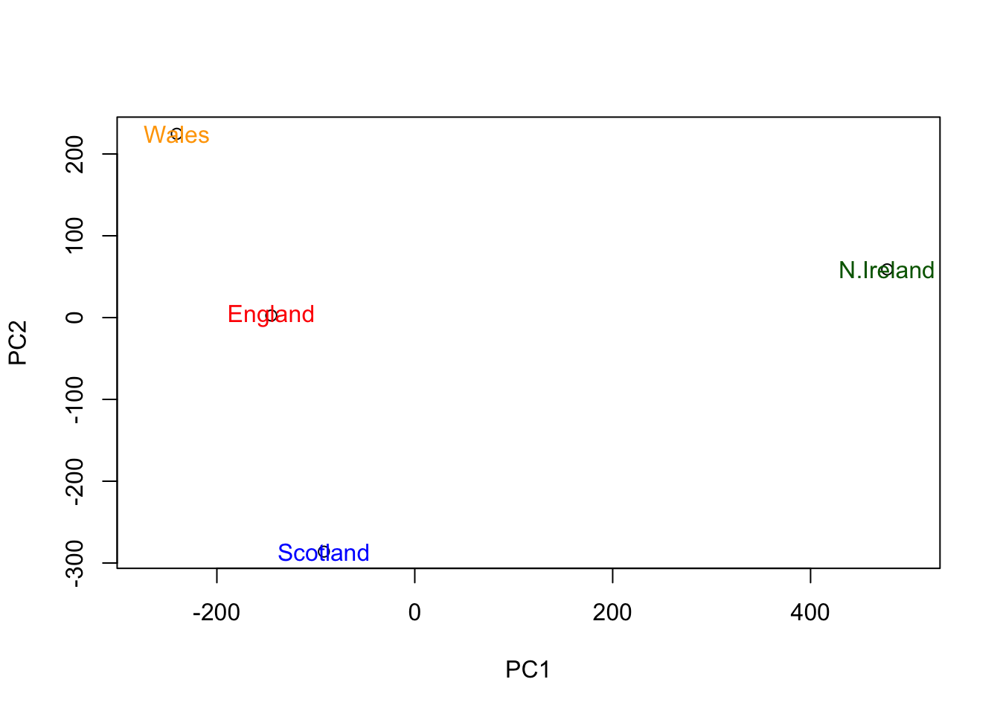

tmp <- c(rnorm(30, -3), rnorm(30,3))
x <- cbind(x=tmp, y=rev(tmp))
plot(x)
Let’s make up some data to cluster.
tmp <- c(rnorm(30, -3), rnorm(30,3))
x <- cbind(x=tmp, y=rev(tmp))
plot(x)
This function to do k-means clustering in base R is kmeans() . We give this our input data for clustering and the number of clusters we want centers.
Q. How many points are in each cluster? Q. What ‘component’ of your result object details - cluster size? - cluster assignment/membership? - cluster center?
km <- kmeans(x, centers=4, nstart=20)
kmK-means clustering with 4 clusters of sizes 17, 13, 17, 13
Cluster means:
x y
1 3.409973 -3.598361
2 -2.199308 2.372374
3 -3.598361 3.409973
4 2.372374 -2.199308
Clustering vector:
[1] 3 3 2 2 2 2 3 2 2 3 3 3 3 3 3 2 3 3 2 3 2 3 2 3 2 3 2 3 3 2 4 1 1 4 1 4 1 4
[39] 1 4 1 4 1 1 4 1 1 1 1 1 1 4 4 1 4 4 4 4 1 1
Within cluster sum of squares by cluster:
[1] 19.089199 9.091503 19.089199 9.091503
(between_SS / total_SS = 95.2 %)
Available components:
[1] "cluster" "centers" "totss" "withinss" "tot.withinss"
[6] "betweenss" "size" "iter" "ifault" km$cluster [1] 3 3 2 2 2 2 3 2 2 3 3 3 3 3 3 2 3 3 2 3 2 3 2 3 2 3 2 3 3 2 4 1 1 4 1 4 1 4
[39] 1 4 1 4 1 1 4 1 1 1 1 1 1 4 4 1 4 4 4 4 1 1Q. Plot y colored by the kmeans cluster assignment and add cluster centers as blue points
plot (x, col=km$cluster)
points(km$centers, col="blue", pch=15, cex=1.5)
#Heirarchical Clustering
The hclust() function performs hierarchical clustering. The big advantage here is I don’t need to tell it ‘k’ the number of clusters
To run hclust() I need to provide a distance matrix as input (not the original data)
hc <- hclust(dist(x))
hc
Call:
hclust(d = dist(x))
Cluster method : complete
Distance : euclidean
Number of objects: 60 plot(hc)
abline(h=8, col="red")
To get my “main” result (cluster membership) I want ot “cut” the tree to yield “branches” whos leaves are teh members of the cluster
grps <- cutree(hc, k=2)Make a plot of our hclust() results i.e. our data colored by cluster assignment!
plot(x, col=grps)
url <- "https://tinyurl.com/UK-foods"
x <- read.csv(url)How many rows and columns are in your new data frame named x? What R functions could you use to answer this questions? To solve for the number of rows and columns you can use the nrow() and ncol() function on the data set, so there are 17 rows and 5 columns
To display the first 6 rows, you can use the head() function, so the first six rows are
head(x) X England Wales Scotland N.Ireland
1 Cheese 105 103 103 66
2 Carcass_meat 245 227 242 267
3 Other_meat 685 803 750 586
4 Fish 147 160 122 93
5 Fats_and_oils 193 235 184 209
6 Sugars 156 175 147 139rownames(x) <- x[,1]
x <- x[,-1]
head(x) England Wales Scotland N.Ireland
Cheese 105 103 103 66
Carcass_meat 245 227 242 267
Other_meat 685 803 750 586
Fish 147 160 122 93
Fats_and_oils 193 235 184 209
Sugars 156 175 147 139x <- read.csv(url, row.names =1)
head(x) England Wales Scotland N.Ireland
Cheese 105 103 103 66
Carcass_meat 245 227 242 267
Other_meat 685 803 750 586
Fish 147 160 122 93
Fats_and_oils 193 235 184 209
Sugars 156 175 147 139#Q2. Which approach to solving the ‘row-names problem’ mentioned above do you prefer and why? Is one approach more robust than another under certain circumstances?
I prefer the (url, row.names=1) because this sets the entire data set up correctly with row names before anything needs to be computed in the smallest amount of steps. This also does not have any opportunity to accidentally remove rows, which will happen if you “play” the chunk too many times.
barplot(as.matrix(x), beside=T, col=rainbow(nrow(x)))
Changing what optional argument in the above barplot() function results in the following plot?
You need to take the “beside” argument and make it false so that the categories stack (though this makes them incredibly difficult to compare).
barplot(as.matrix(x), beside=F, col=rainbow(nrow(x)))
Generating all pairwise plots may help somewhat. Can you make sense of the following code and resulting figure? What does it mean if a given point lies on the diagonal for a given plot?
pairs.default(x, col = rainbow(10), pch = 16)
If a data point lies on the y=x diagonal, that category (color of dot) is equal between the two countries that are being compared.
What is the main differences between N. Ireland and the other countries of the UK in terms of this data-set?
The most standout point for N. Ireland is the one represented by the “blue” data point, which stands out from all of the other countries from which it is being compared as it is much lower in that category for each of those.
The main function is base R to do PCA is called prcomp(). One issue with the prcomp()
t(x) Cheese Carcass_meat Other_meat Fish Fats_and_oils Sugars
England 105 245 685 147 193 156
Wales 103 227 803 160 235 175
Scotland 103 242 750 122 184 147
N.Ireland 66 267 586 93 209 139
Fresh_potatoes Fresh_Veg Other_Veg Processed_potatoes
England 720 253 488 198
Wales 874 265 570 203
Scotland 566 171 418 220
N.Ireland 1033 143 355 187
Processed_Veg Fresh_fruit Cereals Beverages Soft_drinks
England 360 1102 1472 57 1374
Wales 365 1137 1582 73 1256
Scotland 337 957 1462 53 1572
N.Ireland 334 674 1494 47 1506
Alcoholic_drinks Confectionery
England 375 54
Wales 475 64
Scotland 458 62
N.Ireland 135 41pca <- prcomp(t(x))
summary(pca)Importance of components:
PC1 PC2 PC3 PC4
Standard deviation 324.1502 212.7478 73.87622 4.189e-14
Proportion of Variance 0.6744 0.2905 0.03503 0.000e+00
Cumulative Proportion 0.6744 0.9650 1.00000 1.000e+00The object returned by prcomp() has our results that include our $X component. This is our “scores” along the PCs (i.e. The plot of the data along the new PC axis).
Complete the code below to generate a plot of PC1 vs PC2. The second line adds text labels over the data points
plot(pca$x[,1], pca$x[,2], xlab="PC1", ylab="PC2", xlim=c(-270,500))
text(pca$x[,1], pca$x[,2], colnames(x))
#Q8 Customize your plot so that the colors of the country names match the colors in our UK and Ireland map and table at start of this document
plot(pca$x[,1], pca$x[,2], xlab="PC1", ylab="PC2", xlim=c(-270,500))
text(pca$x[,1], pca$x[,2], colnames(x), col=c("red", "orange", "blue", "darkgreen")) 
par(mar=c(10, 3, 0.35, 0))
barplot( pca$rotation[,1], las=2 )